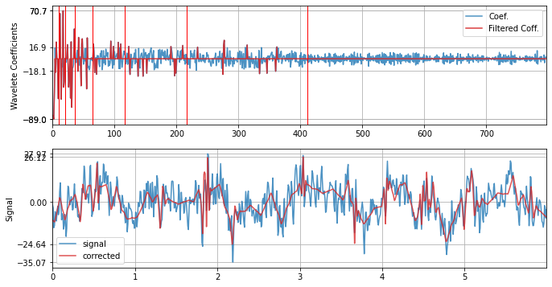
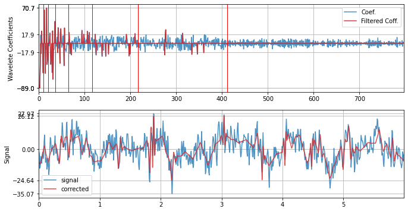
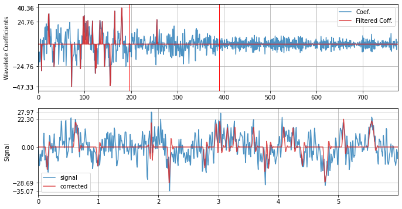
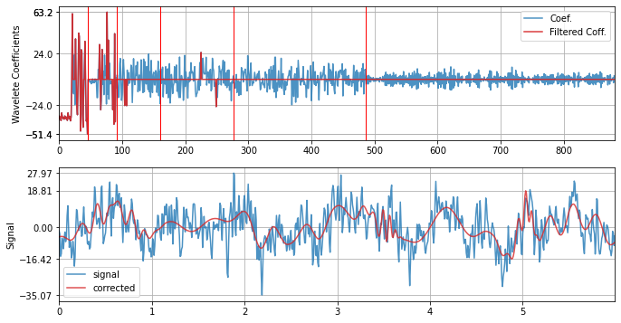
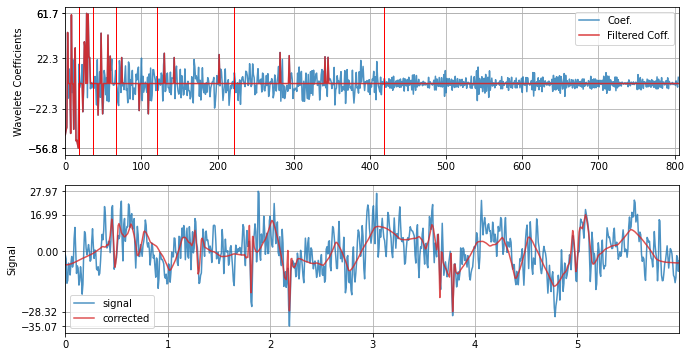
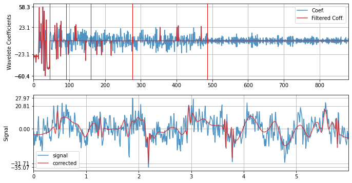

Wavelet Filtering


Background
Other than classical frequency filtering, Wavelet filtering is one of common techniques used in signal processing. It allows to filter out short-time duration patterns captured by used wavelet. The patterns to be filtered out depends on the wavelet family (e.g. db3) used and number of level of decomposition.
Algorithmically, it is very straightforward. Decompose a signal x(n), into wavelet coefficients X(k), where each coefficient represents the strength of wavelet pattern at particular time. With some threshold, remove the coefficients by zeroing out and reconstruct the signal back.
The machanism to choose a threshold on the strength of wavelet coefficient depends on the application and objective. To remove the noise and compress the signal, a widely used approach is to filter out all the wavelet coefficients with smaller strength.
Literature [1] suggest the optimal threshold on the wavelet coeffiecient is
\[\begin{eqnarray} \theta = \tilde{\sigma} \sqrt{2log(N)}\\ \tilde{\sigma} = median(|X(k)|)/0.6745 \end{eqnarray}\]where \(\tilde{\sigma}\) is estimation of noise variance and \(N\) length of signal.
There are other methods to choose threshold too. One can choose a \(\theta =1.5\times SD(X(k))\) or \(\theta =IQR(X(k))\) as to select the outliers, by standard deviation and interquartile range, respectively.
According to the theory, the optimal threshold should be applied by zeroing out the coefficients below with magnitude lower than threshold \(abs(X(k))< \theta\), and for later two methods of thresholds,standard deviation and interquartile range, the coefficients outside of the threshold should be zeroing out, since they reprepresent the outliers. However, some of the (weired) articles use these thresholds in other-way round.
A simple block-diagram shown below is the procedure of wavelet filtering.

References:
- [1] D.L. Donoho, J.M. Johnstone, Ideal spatial adaptation by wavelet shrinkage Biometrika, 81 (1994), pp. 425-455


API –
- spkit.wavelet_filtering(…)
- spkit.wavelet_filtering_win(…)
In spkit, we have implemented all three methods for threshold computing, can be chosen by threshold = ‘optimal’, ‘sd’ or ‘iqr’ or can be passed as a float value for a fixed threshold, e.g. threshold = 0.5. It also support to choose, if you want to zero out coefficient below the threshold or above by setting filter_out_below True or False. However, default setting is threshold=’optimal’ and filter_out_below=True.
There are a few more options to tune threshold and mode of filtering. For more details see doc section or run help(sp.wavelet_filtering)
import numpy as np
import matplotlib.pyplot as plt
import spkit as sp
sp.__version__
'0.0.9.4'
Example with EEG sample signal
x,fs = sp.load_data.eegSample_1ch()
x = x[fs*2:fs*8]
t = np.arange(len(x))/fs
plt.figure(figsize=(15,3))
plt.plot(t,x)
plt.xlim([t[0],t[-1]])
plt.grid()
plt.xlabel('time (s)')
plt.show()

Wavelet filtering with optimal threshold ans db3
xf = sp.wavelet_filtering(x.copy(),wv='db3',threshold='optimal',verbose=1,WPD=False,show=True,fs=fs)
WPD: False wv: db3 threshold: optimal k: 1.5 mode: elim filter_out_below?: True

with SD threshold
xf = sp.wavelet_filtering(x.copy(),wv='db3',threshold='sd',verbose=1,WPD=False,show=True,fs=fs)
WPD: False wv: db3 threshold: sd k: 1.5 mode: elim filter_out_below?: True

with IQR
xf = sp.wavelet_filtering(x.copy(),wv='db3',threshold='iqr',verbose=1,WPD=False,show=True,fs=fs)
WPD: False wv: db3 threshold: iqr k: 1.5 mode: elim filter_out_below?: True

Limit the number of levels for decomposition to 2
xf = sp.wavelet_filtering(x.copy(),wv='db3',threshold='optimal',wpd_maxlevel=2,verbose=1,WPD=False,show=True,fs=fs)
WPD: False wv: db3 threshold: optimal k: 1.5 mode: elim filter_out_below?: True

with db12
xf = sp.wavelet_filtering(x.copy(),wv='db12',threshold='optimal',verbose=1,WPD=False,show=True,fs=fs)
WPD: False wv: db12 threshold: optimal k: 1.5 mode: elim filter_out_below?: True

with Symlet - sym4
xf = sp.wavelet_filtering(x.copy(),wv='sym4',threshold='optimal',verbose=1,WPD=False,show=True,fs=fs)
WPD: False wv: sym4 threshold: optimal k: 1.5 mode: elim filter_out_below?: True

with Coiflet - coif4
xf = sp.wavelet_filtering(x.copy(),wv='coif4',threshold='optimal',verbose=1,WPD=False,show=True,fs=fs)
WPD: False wv: coif4 threshold: optimal k: 1.5 mode: elim filter_out_below?: True

help(sp.wavelet_filtering)
Help on function wavelet_filtering in module spkit.core.processing:
wavelet_filtering(x, wv='db3', threshold='optimal', filter_out_below=True, k=1.5, mode='elim', show=False, wpd_mode='symmetric', wpd_maxlevel=None, packetwise=False, WPD=True, lvl=[], verbose=False, fs=128.0, sf=1, IPR=[0.25, 0.75])
Threshold Computation method:
threshold: 'str' or float
: if str, method to compute threshold, example : 'optimal', 'sd', 'iqr'
'optimal': threshold = sig*sqrt(2logN), sig = median(|w|)/0.6745
'sd' : threshold = k*SD(w)
'iqr': threshold = q3+kr, threshold_l =q1-kr, where r = IQR(w) #Tukey's fences
'ttt': Modified Thompson Tau test (ttt) #TODO
default - optimal
mode: str, 'elim' - remove the coeeficient (by zering out), 'clip' - cliping the coefficient to threshold
default 'elim'
below: bool, if true, wavelet coefficient below threshold are eliminated else obove threshold
Wavelet Decomposition modes:
wpd_mode = ['zero', 'constant', 'symmetric', 'periodic', 'smooth', 'periodization']
default 'symmetric'
wpd_maxlevel: level of decomposition, if None, max level posible is used
Wavelet family:
wv = ['db3'.....'db38', 'sym2.....sym20', 'coif1.....coif17', 'bior1.1....bior6.8', 'rbio1.1...rbio6.8', 'dmey']
:'db3'(default)
packetwise: if true, thresholding is applied to each packet/level individually, else globally
WPD: if true, WPD is applied as wavelet transform
lvl: list of levels/packets apply the thresholding, if empty, applied to all the levels/packets